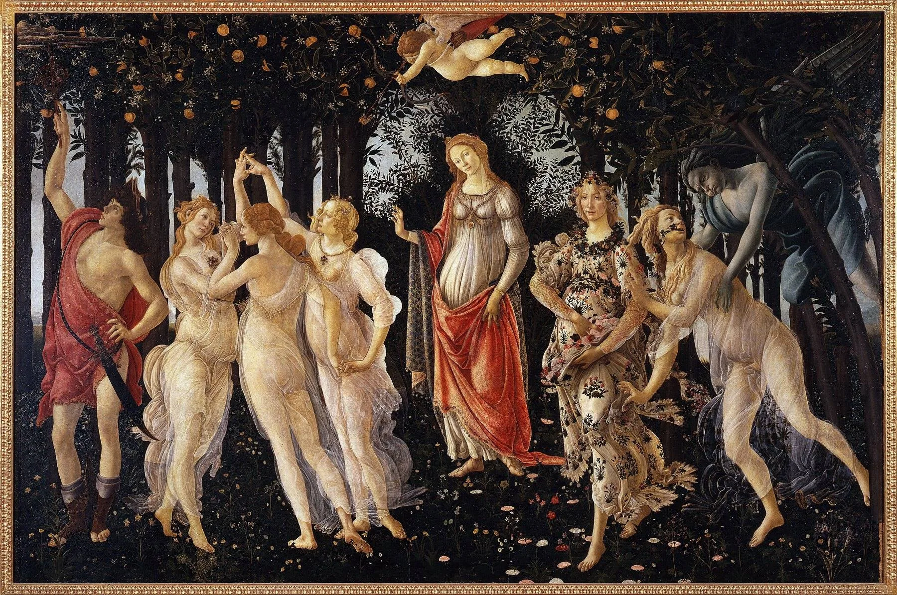
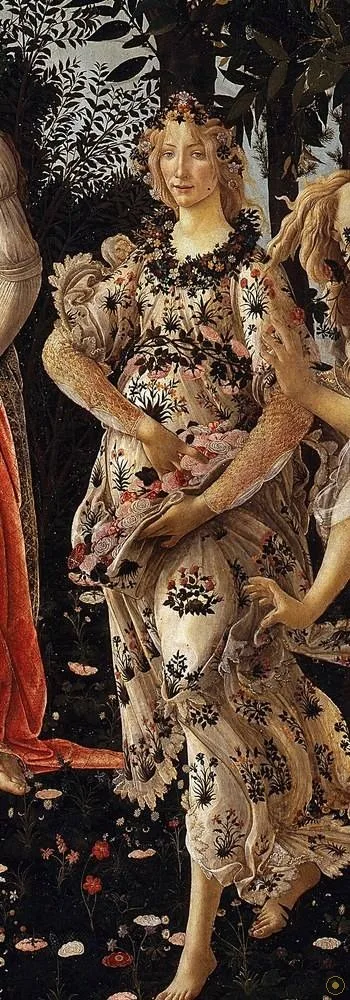
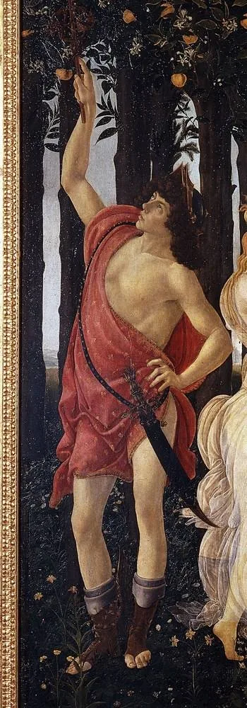
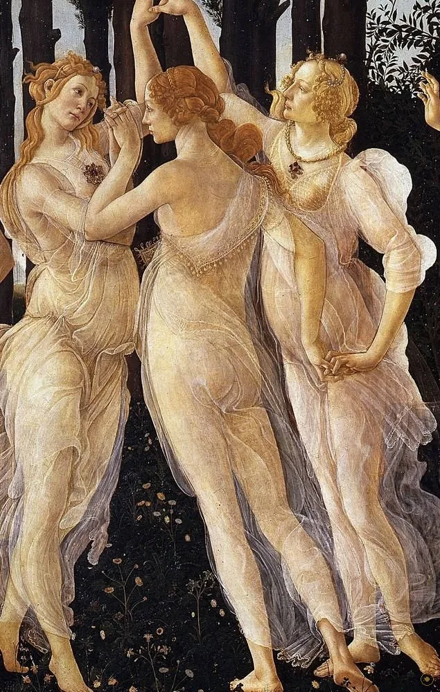
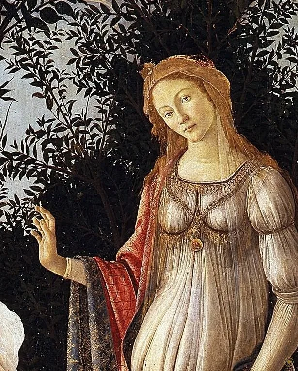
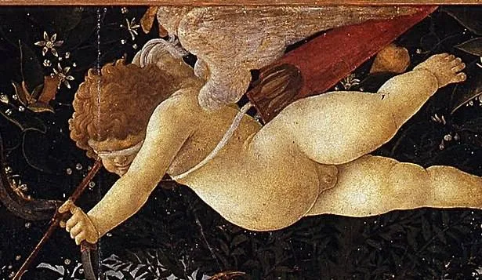
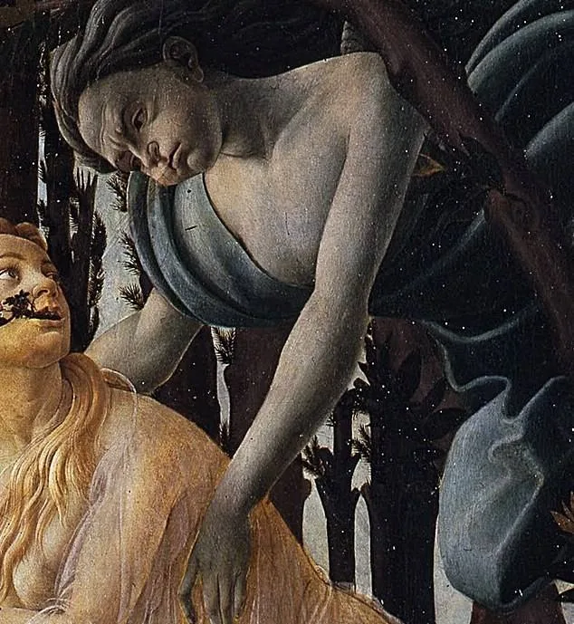
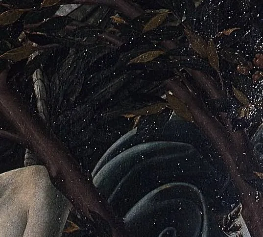
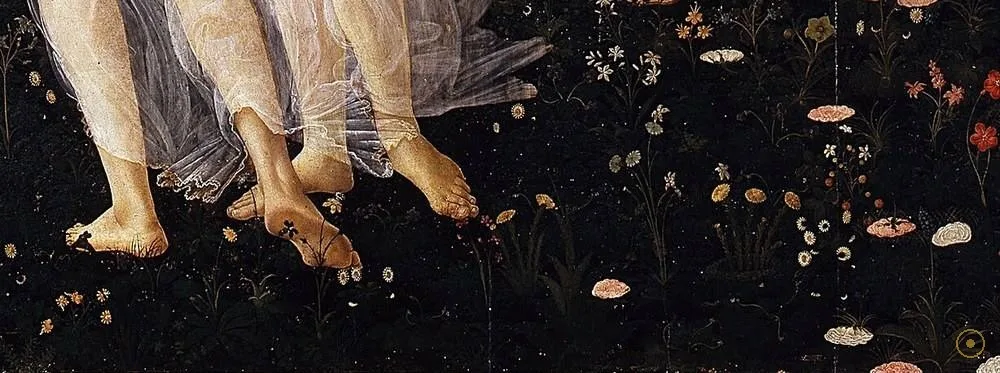

本页面展示的画作包含 艺术人体 / 裸体 内容。所录作品均为美术馆级公有领域馆藏，仅作艺术欣赏与学习之用，不含任何低俗或违规意图。
若您未满 18 周岁，或对此类内容感到不适，请点击「返回画廊」。点击「进入欣赏」即表示您已知悉上述说明，并同意仅作艺术欣赏之用。
「Ecco la primavera, che 'l cor fa rallegrare。」——看啊，春天来了，心也随之欢愉。
这句话不是画家的题词，而是一支歌：十四世纪佛罗伦萨盲乐师弗朗切斯科·兰迪尼的叙事歌谣，唱的就是这座城市的春天。两百年后，波提切利把这支歌画了出来——九个人物站进一片幽暗的桔树林：维纳斯居中，丘比特在上，墨丘利驱云，三女神起舞，花神撒花，风神在画面最角落掳走一位宁芙。这是一片会走路的树林，也是文艺复兴最著名、也最沉默的一幅画。
沉默，是因为没有人知道它到底「是什么」。五百年来没有找到一张同时代文献解释它的题材与用途：它是为一场婚事而画？是一则新柏拉图主义的哲学寓言？还是一幅挂进卧房、讨个吉利的「春之图像」？每种说法都有证据，也都有漏洞。你能确定的只有眼前：它大得惊人（两米宽、三米高），几乎全用蛋彩画在白杨木板上，草地上长着近五百种植物。
所以这一页不打算给你一个标准答案——它没有。让我们按波提切利安排的顺序走进去：从左边墨丘利的权杖，到右边风神的手掌。注意那阵风：整个画面所有的动势，其实都从它的方向吹来。
—— 弗朗切斯科·兰迪尼《Ecco la primavera》 · 十四世纪佛罗伦萨叙事歌谣（据英译转译）
在本页左下角，可以点亮这支与画同龄的春之歌。
从左到右读：神的面孔在旋转，花朵在落地，而被风抓住的那位宁芙，正一边挣扎一边开出花来。

点击画面中的 ✦ 光点 查看画面细节 · 图片来源：Wikimedia Commons（公有领域）
它画完不到二十年就赶上一场文化地震；随后被遗忘四百年，再醒来时已是一代名画。
约 1480 · 佛罗伦萨
主流假说认为，《春》是为美第奇家族旁支的洛伦佐·迪·皮耶尔弗兰切斯科的宅邸而作，时间在他 1482 年婚礼前后——尺幅、题材与画中反复出现的家族象征（桔子、月桂）都指向这场婚事。也有学者把它与新柏拉图主义圈子（费奇诺的哲学沙龙）联系起来：美从感官升向神性，维纳斯是这道阶梯的化身。五百年过去，动机仍无定论——但画本身一出手就是杰作。
➤1497 · 虚荣之火
1490 年代，修士萨伏那洛拉统治佛罗伦萨，掀起焚烧「虚荣之物」的运动：假发、乐器、异教题材绘画投入火堆。据瓦萨里记载，波提切利是萨伏那洛拉的追随者，甚至亲手烧毁了自己多幅异教题材作品（此说真伪至今有争议）。无论他烧没烧，《春》活了下来——此后数百年它挂在美第奇的乡村别墅里，安然无恙，也无人问津。
➤1550 → 1919 · 卡斯特洛 → 乌菲兹
1550 年瓦萨里在《艺苑名人传》里记录了它：他在卡斯特洛别墅见到这幅画，准确描述了维纳斯与三女神——但没提它的作者意图，画名也长期只是「卡斯特洛的维纳斯」。此后它被遗忘在乡间别墅数百年，直到 19 世纪拉斐尔前派把波提切利重新捧上神坛。1919 年，《春》正式进入乌菲兹美术馆；1980 年代的修复洗去积垢，它成了今天全球朝圣者排队来看的镇馆之宝。

真事一 · 它是「没有说明书的杰作」。五百年来，从未发现任何一份同时代文献说明《春》的题材、委托人或悬挂位置。今天所有「婚庆画」「哲学寓言」的说法都是后世推断。这个名字 Primavera（春）到 1550 年才由瓦萨里间接使用——这幅画连名字都比它年轻七十岁。
真事二 · 所有人共用一张「理想脸」。细看会发现：三女神、弗洛拉甚至维纳斯，五官高度相似——同款侧鼻、同款下唇、同款微垂的眼。这不是偷懒，是波提切利的「理想型」面孔，他把它用在几乎所有女性形象上，《维纳斯的诞生》亦然。批评者说他「不重写实」，他干脆把这种线条化的、反透视的美推成了风格。
真事三 · 木板会「呼吸」，修复救了它一次。这幅画绘于五块白杨木板拼接的画板上，总重数百公斤。木板随湿度变形，颜料层曾多次起甲开裂；1980 年代乌菲兹对它做了大修，加固板背、清洁画面，那片近五百种植物的花毯才重新清晰可辨。今天它挂在乌菲兹恒温恒湿的专厅里——一片被小心呵护的春天。
※ 委托经过、焚画记载与植物统计均为学界通行的假说或据瓦萨里等文献转述，存在争议；引文据英译转译，措辞或因译本而异。
把画面拆开看：每个人物都在「给予」——给予春天、给予花、给予爱，或给予风。

杖尖挑开云雾，为春天清出第一块晴空——也站在家族守护星的位置上。

薄纱透明画法的巅峰：三个角度、一个圆，全画最优雅的一段几何。

唯一面向观者的人。头顶树叶让出的拱形缺口，像为她留的一座圣坛。

火把瞄准三女神的旋转圆——爱不讲道理，箭不看脸。
满裙真实花种、腰兜玫瑰——她走过的地方，春天落地。

被抓住的宁芙口吐花枝，枝头连着变身后的自己——一格画面，两个时间。

全画唯一的冷色，也是所有动势的源头：春天是被他吹出来的。

百余种可鉴定学名的真实花草，铺成一张文艺复兴的植物地图。
佛罗伦萨的新柏拉图主义圈子相信：美有三个阶梯——感官之美（形体）、人性之美（灵魂）、神圣之美（神性）。从克洛里斯被春风带走（感官的觉醒）到弗洛拉撒花（美的馈赠）再到中央静立的维纳斯（美的理念），画面恰好沿这条阶梯排开。这未必是画家的本意，却让这幅画成了哲学史最爱引用的图像。
波提切利不大在乎解剖与透视：人物悬浮、草地不缩、身体转出不可能的角度。他要的是线——衣褶的线、卷发的线、轮廓的线。这种「以线造型」在 15 世纪末并不主流（同代的达·芬奇正走向晕涂与空气透视），但正是这种不合时宜，让他在 400 年后被拉斐尔前派当作反叛学院派的旗帜重新发现。
《春》绝大部分时间不在公众视野里：先在佛罗伦萨城内的宅邸，后在美第奇乡村别墅一挂数百年。它没有进过 18 世纪的大旅行者必看清单，也不在任何画册的头条——直到 19 世纪英国拉斐尔前派与美学家把它奉为「线条的神迹」。一幅画的重生，有时靠的不是出土，而是品味的变化。
1919 年入藏乌菲兹后，《春》逐渐成为佛罗伦萨的城市名片：数百万游客的终点站，无数次时尚大片、电影布景与品牌视觉的引用源。人们未必记得九位神祇的名字，但都记得那个画面：幽暗的树林里，衣袂飘飞的人们正把春天递给你。
为美第奇家族年轻支系（主流假说）绘于佛罗伦萨，蛋彩白杨木板，五板拼合。
萨伏那洛拉「虚荣之火」时期，据瓦萨里记载波提切利曾令部分作品在火中散去；《春》幸存。
瓦萨里在卡斯特洛别墅记录此画——五百年间关于它唯一的同时代晚期文献。
正式入藏乌菲兹美术馆；1980 年代大修复令花毯与薄纱重放光彩。
乌菲兹镇馆之宝、佛罗伦萨的城市名片——文艺复兴最著名的一片树林。